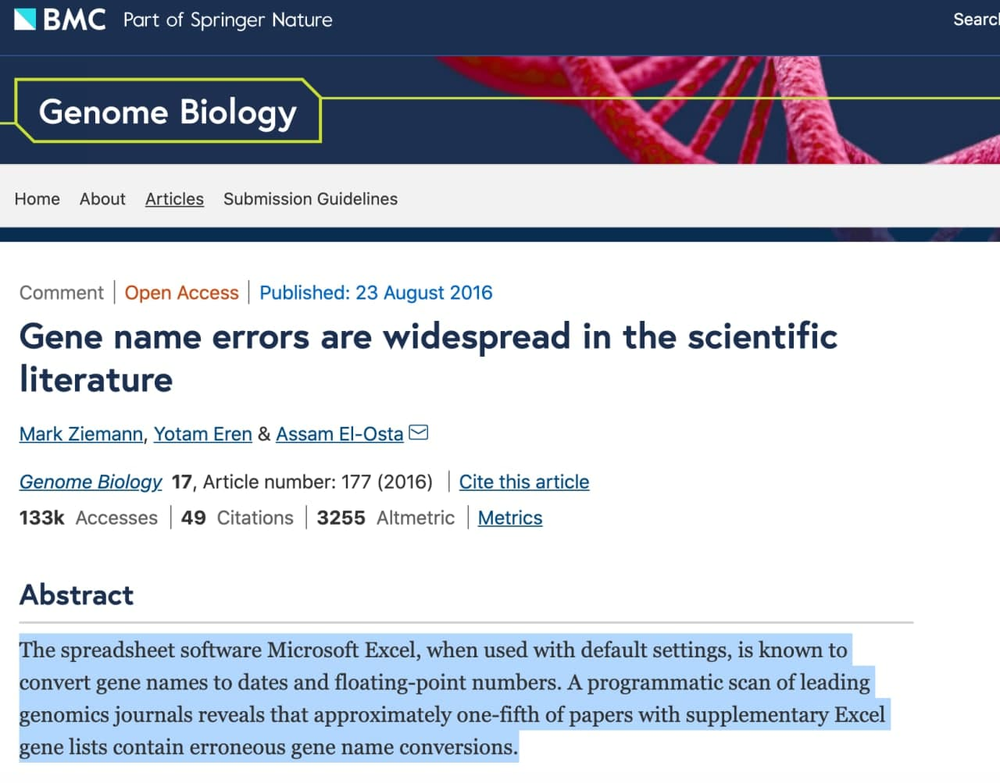

Si tienes amistades matemáticas o dedicadas activamente al análisis de datos, am√©n de replantearte qu√© haces con tu vida, seguramente te hayan dado la brasa sobre desterrar de tu vida el Excel, esa maravillosa hoja de cálculo que Microsoft pone a nuestra disposici√≥n. Y aunque parezca contradictorio con el t√≠tulo de la entrada, he aqu√≠ mi primer consejo: no dejes de usar Excel, es maravilloso…para la funci√≥n para la que fue creado. Y es que Excel, como detalla Microsoft en su propia documentaci√≥n, fue dise√±ado como una potente hoja de cálculo, pero una hoja de cálculo al fin y al cabo.
Una hoja de cálculo es un tipo de documento que permite manipular datos numéricos y alfanuméricos dispuestos en forma de tablas compuestas por celdas, las cuales se suelen organizar en una matriz de filas y columnas. (Wikipedia)
La potencia de Excel, como de todo el paquete Office, radica en su aparente sencillez de uso y su flexibilidad, con una apariencia que nos resulta familiar, ya que hemos sido educados durante muchos años en el marco estético de Microsoft. Excel es una muy eficaz herramienta para planificar viajes, cuentas familiares, las finanzas de pequeñas empresas, la declaración de la renta o la gestión de tareas mecánicas y no suficientemente complejas. Y está bien que siga existiendo, yo mismo lo sigo usando para algunas de esas tareas. ¿La clave? No usarlo para tareas para las que no fue diseñado.
 
Bases de datos y lenguajes de programación
Y es que uno de los grandes problemas del Excel ha sido, es y será su uso como base de datos. ¿Por qué es una pésima idea dicho uso? En informática y gestión de datos, se conoce como base de datos a toda herramienta (o conjunto de las mismas) que permitan (entre otras tareas)
- Almacenar GRANDES cantidades de datos.
- Permitir la INTERRELACIÓN con otras bases de datos.
- Preservar la INTEGRIDAD del dato (que campos como la fecha no dependa del ordenador o la versión que tengas instalada).
- Permitir CONSULTAR los datos de forma rápida y eficiente, en base a uniones, intersecciones, filtros y otras operaciones lógicas.
- Permitir la AUTOMATIZACIÓN de tareas.
Tareas muchas de ellas que, o bien Excel no tiene implementadas, o bien (y he aquí el truco) la curva de aprendizaje necesaria (por ejemplo, para programar en Excel las conocidas como macros) acaba siendo mucho más elevada que las propias bases de datos o lenguajes de programación como R o Python (que no solo permite el análisis, el cálculo y una más eficiente gestión de los datos que Excel, sino una sencilla automatización), lenguajes ambos de alto nivel para el usuario y modulares. Los lenguajes de alto nivel como R, Python (curso interactivo de Python en https://checkio.org/) o Matlab, facilitan la programación al usuario, teniendo que preocuparte solo de la tarea de programar. Son lenguajes con una menor curva de aprendizaje aunque suelen ser más lentos en su ejecución en comparación con lenguajes de bajo nivel (C, C++ o Fortran), lenguajes muy rápidos en su ejecución pero cuya programación requiere un mayor tiempo y formación, teniendo que además estar pendiente del tipo de variables, espacio en memoria, etc.
Por su arquitectura, R en concreto es un lenguaje que puede ser usado para un propósito general pero que está especialmente diseñado para el análisis estadístico de datos, así como la visualización gráfica de los mismos. Su modularidad nos da la ventaja de que podemos instalar las funcionalidades que vayamos necesitando de forma progresiva.
¿Cuáles son las principales desventajas de Excel?
-
Software de pago: Excel, al igual que el resto de programas de Microsoft o SPSS (por desgracia, programa estrella de nuestro sistema sanitario), es un programa de pago. A nivel individual, todos hemos tenido una versión que no hemos pagado, pero dicha evasión no se la puede permitir una empresa, universidad o administración, que debe pagar altas cantidades de dinero anuales por las licencias, dinero que no sería necesario si los investigadores y trabajadores tuvieran formación (remunerada) en herramientas de software libre.
-
Software cerrado: no solo es de pago sino que es cerrado (no es software libre), así que solo podemos hacer lo que Excel ha creído interesante que podamos hacer. Incluso con la programación de macros, las funcionalidades de Excel siguen siendo mucho más limitadas.
-
Alto consumo de memoria: dicha programación ya predeterminada hace que Excel ocupe muchísimo espacio en el disco duro y tenga un alto consumo de memoria (la memoria es lo que te permite hacer varias tareas a la vez en tu ordenador).
-
No es universal: no solo es de pago sino que además, dependiendo de la versión que tengas de Excel, tendrá un formato distinto para datos como fechas, teniendo incluso extensiones distintas, de forma que un archivo
.xlsabierto por un Excel moderno puede provocar errores en la carga. -
¡ES SOLO UNA HOJA DE CÁLCULO!: como ya hemos comentado, el propio Microsoft desaconseja el uso de Excel para el análisis de grandes volúmenes de datos.
¿Puedes ser el mejor partiendo un filete con una cuchara? Seguramente puedas (en Excel puedes hasta programar con macros), y si siempre lo hiciste así, acabarás normalizándolo, pero seguirás siendo una persona comiendo filete con cuchara (reflexión de un servidor).
 
¿Qué sucede si usamos la herramienta equivocada?
Tres ejemplos:
- Problemas para codificar fechas: en 2016 se publicó una revisión de artículos en genética, descubriendo que 1 de cada 5 artículos contenían errores debido a una mala codificación de las fechas, conviertiendo por ejemplo los genes Septin-2 (conocido como SEPT2) en fechas, y al revés.

- Problemas de memoria: un Excel permite por defecto una cantidad máxima de filas. Aunque dicha cantidad se puede ampliar, sigue siendo finita, por lo que cuando superas el umbral de filas, al añadir filas Excel te borra registros sin avisarte de que lo está haciendo. Esto es lo que sucedió con los registros de casos covid en Reino Unido.

- Problemas para codificar edades: una variable de tipo fecha, aunque nosotros la veamos con letras, en realidad es una variable numérica que representa los días que han pasado desde una fecha origen. En función de las distintas versiones de Excel, dicha fecha origen cambia. Además, si se codifica mal la fecha en formato
dd-mm-YY, dicho formato cuando se exporta a otro excel en texto, no permite distinguir a un nacido en 1918 y a un nacido en 2018, así que podemos estar confundiendo personas de 103 años con niños de 3 años (y es lo que sucedió en España, observando unas tasas de mortalidad en niños muy pequeños equivalentes a personas mayores).

   
Moraleja: la sopa, con cuchara.